Abaqus Plug-In (desicos.abaqus)¶
The desicos.abaqus module includes the DESICOS plug-in for Abaqus
whose functionalities can be used in two main ways, using the Graphic
User Interface (GUI) or using the Python API.
ConeCyl (desicos.abaqus.conecyl)¶
Cone/Cylinder Model¶
Figure 1 provides a schematic view of the typical model created using this
module. Two coordinate systems are defined: one rectangular with axes 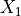,
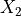,  and a cylindrical with axes
and a cylindrical with axes  , 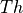,
, 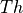,  .
.

Figure 1: Cone/Cylinder Model¶
The complexity of the actual model created in Abaqus goes beyond the simplification above
Boundary Conditions¶
Based on the coordinate systems shown in Figure 1 the following boundary condition parameters can be controlled:
constraint for radial and circumferential displacement (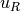 and 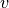) at the bottom and top edges
simply supported or clamped bottom and top edges, consisting in the rotational constraint along the meridional coordinate, called 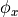.
use of resin rings as described in the next section
the use of distributed or concentrated load at the top edge will be automatically determined depending on the attributes of the current
ConeCylobjectapplication of shims at the top edge as detailed in
ImpConf.add_shim_top_edge(), following this example:from desicos.abaqus.conecyl import ConeCyl cc = ConeCyl() cc.from_DB('castro_2014_c02') cc.impconf.add_shim(thetadeg, thick, width)
application of uneven top edges as detailed in
UnevenTopEdge.add_measured_u3s(), following this example:thetadegs = [0.0, 22.5, 45.0, 67.5, 90.0, 112.5, 135.0, 157.5, 180.0, 202.5, 225.0, 247.5, 270.0, 292.5, 315.0, 337.5, 360.0] u3s = [0.0762, 0.0508, 0.1270, 0.0000, 0.0000, 0.0762, 0.2794, 0.1778, 0.0000, 0.0000, 0.0762, 0.0000, 0.1016, 0.2032, 0.0381, 0.0000, 0.0762] cc.impconf.add_measured_u3s_top_edge(thetadegs, u3s)
Resin Rings¶
When resin rings are used the actual boundary condition will be determined by the parameters defining the resin rings (cf. Figure 2), and therefore no clamped conditions will be applied in the shell edges.

Figure 2: Resin Rings¶
Defining resin rings can be done following the example below, where each
attribute is detailed in the ConeCyl class description:
from desicos.abaqus.conecyl import ConeCyl
cc = Conecyl()
cc.from_DB('castro_2014_c02')
cc.resin_add_BIR = False
cc.resin_add_BOR = True
cc.resin_add_TIR = False
cc.resin_add_TOR = True
cc.resin_E = 2454.5336
cc.resin_nu = 0.3
cc.resin_numel = 3
cc.resin_bot_h = 25.4
cc.resin_top_h = 25.4
cc.resin_bir_w1 = 25.4
cc.resin_bir_w2 = 25.4
cc.resin_bor_w1 = 25.4
cc.resin_bor_w2 = 25.4
cc.resin_tir_w1 = 25.4
cc.resin_tir_w2 = 25.4
cc.resin_tor_w1 = 25.4
cc.resin_tor_w2 = 25.4
The ConeCyl Class¶
-
class
desicos.abaqus.conecyl.conecyl.ConeCyl[source]¶ ConeCyl object
Carries all the information necessary to create a finite element model for the analysis of conical and cylindrical structures. The tables below show the attributes grouped by category.
General Attributes
Description
name_DBstr, name of the correspondingdesicos.conecylDB.ccsentrymodel_namestr, Name of the corresponding model in Abaqusrenamebool, tells to automatically rename duringrebuild()rebuiltbool, tells ifrebuild()already finishedcreated_modelbool, tells if the corresponding model was already created in AbaqusimpconfThe corresponding imperfection configuration (see
ImpConf)stringerconfThe corresponding stringer configuration (see
StringerConf)Geometric Attributes
Description
rbotRadius at the bottom edge
rtopRadius at the top edge
HHeight
LMeridional length (same as
Hfor cylinders)alphadegCone semi-vertex angle in degrees
Laminate Attributes
Description
stacklist, stacking sequence with angles in degreesplytfloat, ply thickness that will be used for all pliesplytslist, ply thicknesses for each ply (overwritesplytif both are given). If this has a different length thanstack, the first thickness will be applied for all plieslaminapropKeystr, name of the lamina properties contained in the database (seeconecylDB.laminapropslaminapropKeyslista list of strings when different lamina property names are given for each ply (overwriteslaminapropKeywhen given)laminaproptuple, lamina properties given as(E11, E22, nu12, G12, G13, G23)laminapropslista list of tuples when different lamina properties should be used for each ply (overwriteslaminaprop,laminapropKeyandlaminapropKeys, when given)allowabletuple, lamina allowables given as(S11t, S11c, S22t, S22c, S12, S13)allowableslista list of tuples when different lamina allowables should be used for each plyLoad
Description
displ_controlledbool, if the axial compression is displacement controlledpressure_loadfloat, the pressure load to be applied (a positive value will create a positive pressure, ifNone, False, 0no pressure is applied)pressure_stepint, if pressure should be applied in the first (constant) or second (incremented) stepaxial_displfloat, the axial displacementNote
Applicable if
displ_controlled=Trueaxial_loadfloat, the axial loadNote
Applicable if
displ_controlled=Falseaxial_stepint, if the axial load should be applied in the first (constant) or second (incremented) stepNxxtopstr, allows the use of a general equation for the distributed force 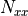 at the top edge. The coordinates of the top edge are given in cylindrical coordinates:R,Th,Z; and common functions likecos,sin,tan,acos,asin,atan,powand constants likepi,eetc can be used. Example:cc.Nxxtop = "cos(Th)+sin(Th)"
Note
If
Nxxtopis not given, the formula: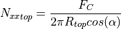
will be adopted, where 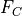 is the
axial_loadattributeNote
Applicable if
displ_controlled=FalseNxxtop_vectuple, the direction to applyNxxtop. Applicable only whenNxxtopis defined. This vector is defined with two points in the cylindrical coordinate system of Figure 1: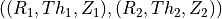
If no direction is given
Nxxtopwill be applied along the shell membrane directionNote
Applicable if
displ_controlled=Falselinear_bucklingbool, tells if the current model is for linear buckling analysis. IfTruethe created model will have no imperfection and only an unitary axial load applied at the top edgeNote
The routines automatically determine whether the load should be distributed or applied in a reference point based on the defined boundary conditions
Boundary Conditions
Description
bc_fix_bottom_uRbool, if the radial displacement should be constrained at the bottom edge (cf. Figure 1)bc_fix_bottom_vbool, if the circumferential displacement should be constrained at the bottom edge (cf. Figure 1)bc_bottom_clampedbool, if the bottom edge should be clampedNote
Until version 2.1.3 (inclusive), this setting would not apply if
cc.resin_add_BIR or cc.resin_add_BORbc_fix_bottom_side_uRbool, if the radial displacement should be constrained at the inner / outer side faces of the bottom resin rings (when present).bc_fix_bottom_side_vbool, if the circumferential displacement should be constrained at the inner / outer side faces of the bottom resin rings (when present).bc_fix_bottom_side_u3bool, if the vertical displacement should be should be constrained at the inner / outer side faces of the bottom resin rings (when present).bc_fix_top_uRbool, if the radial displacement should be constrained at the top edge (cf. Figure 1)bc_fix_top_vbool, if the circumferential displacement should be constrained at the top edge (cf. Figure 1)bc_top_clampedbool, if the top edge should be clampedNote
Until version 2.1.3 (inclusive), this setting would not apply if
cc.resin_add_TIR or cc.resin_add_TORbc_fix_top_side_uRbool, if the radial displacement should be constrained at the inner / outer side faces of the top resin rings (when present).bc_fix_top_side_vbool, if the circumferential displacement should be constrained at the inner / outer side faces of the top resin rings (when present).bc_fix_top_side_u3bool, if the vertical displacement should be should be constrained at the inner / outer side faces of the top resin rings (when present).Resin Rings
Description (the attributes are illustrated here)
resin_add_BIRbool, tells if a resin ring should be added to the inner part of the bottom edgeresin_add_BORbool, tells if a resin ring should be added to the outer part of the bottom edgeresin_add_TIRbool, tells if a resin ring should be added to the inner part of the top edgeresin_add_TORbool, tells if a resin ring should be added to the outer part of the top edgeresin_numelNumber of solid elements in the resin ring
resin_EYoung modulus of the resin material
resin_nuPoisson ratio of the resin material
resin_bot_hThickness of the bottom resin ring
resin_top_hThickness of the top resin ring
resin_bir_w1Lower face width of the bottom inner ring
resin_bir_w2Upper face width of the bottom inner ring
resin_bor_w1Lower face width of the bottom outer ring
resin_bor_w2Upper face width of the bottom outer ring
resin_tir_w1Lower face width of the top inner ring
resin_tir_w2Upper face width of the top inner ring
resin_tor_w1Lower face width of the top outer ring
resin_tor_w2Upper face width of the top outer ring
use_DLR_bcApply boundary conditions used at DLR. It consists on using all the resin rings plus radial constraints only on the side faces of the resin.
Mesh Parameters
Description
numel_rNumber of elements around the circumference. This is sufficient to define the whole mesh size since the algorithms will keep an element aspect-ratio close to 1:1
elem_typeElement type. Tested with:
'S4','S4R','S8R','S8R5'The analysis will be divided in one or two steps, and the corresponding analysis parameters for each step are ending with
1or2. When only one step is used the parameters corresponding to step 2 will be applied.Analysis Parameters
Description
separate_load_stepsbool, tells if the load steps should be separated into two:constant loads
incremented loads
initialInc1Initial increment size for step 1
initialInc2Initial increment size for step 2
minInc1Minimum increment size for step 1
minInc2Minimum increment size for step 2
maxInc1Maximum increment size for step 1
maxInc2Maximum increment size for step 2
maxNumInc1Maximum number of increments for step 1
maxNumInc2Maximum number of increments for step 2
damping_factor1If 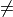
Noneartificial damping will be applied to step 1damping_factor2If
Noneartificial damping will be applied to step 2timeIntervalfloat, the time interval where the outputs will be printedstress_outputbool, tells to print stress outputsforce_outputbool, tells to print force outputsoutput_requestslist, contains all the output variables that will be printed in the outputncpusNumber of CPUs to run the jobs
Methods
Attach the odb file into Abaqus
Calculates the laminate stiffness matrix (ABD matrix)
Calculates the predicted values for P1 and N1 based on empirically obtained formulae
Calculates the KDF using the NASA SP-8007 guideline
calc_partitions([thetadegs, pts])Updates all circumferential and axial positions to partition
create_model([force])Triggers the routines to create the model in Abaqus
detach_results(odb)Detach an odb file from Abaqus
extract_fiber_orientation(ply_index, …)Get the fiber orientation at the centroid of each element
extract_field_output([ignore])Extract the current field output for a cylinder/cone from Abaqus
Get a data grid representing the nodal offsets w.r.t.
Get the thickness at the centroid of each element
fr(z)Calculates the radius at a given
zpositionfrom_DB([name_DB])Fetch all the cone/cylinder data from the database
get_step_name(step)Get the step name corresponding to an integer number
plot_current_field_opened([ignore, plot_type])Print the current field output for a cylinder/cone model from Abaqus
plot_field_data(x, y, field[, …])Print data field output to a file
plot_msi_opened([plot_type])Make an opened MSI (mid-surface imperfection) plot from the current conecyl model
plot_orientation_opened(ply_index, use_elements)Make a fiber orientation plot from the current cone model
plot_thickness_opened([plot_type])Make an opened thickness plot from the current conecyl model
Prepare the
ConeCylto be savedr_z_from_pt([pt])Radius and the axial position from a given normalized position
rebuild([force, save_rebuild])Updates the properties of the current
ConeCylobjecttransform_plot_data(thetas, zs, values, …)Transform coordinates of plot data, to prepare for plotting
write_job([submit, wait, multiple_cores])Writes the job of the corresponding Abaqus model
check_completed
plot_displacements
plot_forces
plot_stress_analysis
plot_xy
read_outputs
read_walltime
stress_analysis
-
attach_results()[source]¶ Attach the odb file into Abaqus
If the odb file exists it will be attached in
session.odbs, in Abaqus.Note
Must be called from Abaqus
-
calc_ABD_matrix()[source]¶ Calculates the laminate stiffness matrix (ABD matrix)
Requires that all the laminate attributes are defines.
- Returns
- lam
Laminateobject.
- lam
-
calc_SPL_prediction()[source]¶ Calculates the predicted values for P1 and N1 based on empirically obtained formulae
Here P1 is the perturbation load (in N) at which a local snap-through (LST) appears at an axial load level equal to the global buckling load. N1 is the global buckling load that is obtained with P1 applied.
- Returns
- outtuple
2-tuple, containing the calculated values for P1 and N1
Notes
The empirical formulae (for now) do not take the full set of laminate properties (A, B, D) into account. Instead, the equivalent orthotropic material is calculated (based on the A-matrix only) and used in the formulae.
-
calc_nasaKDF()[source]¶ Calculates the KDF using the NASA SP-8007 guideline
- Returns
- nasaKDFfloat
The knock-down factor (KDF) calculates using the NASA SP-8007.
-
calc_partitions(thetadegs=None, pts=None)[source]¶ Updates all circumferential and axial positions to partition
This method reads all the imperfections and collects the circumferential positions
thetadegsand the normalized meridional positionsptswhere partitions should be created. These two lists will be used in the routines to create an Abaqus model.- Parameters
- thetadegslist or None, optional
Additional positions where circumferential partitions are desired
- ptslist or None, optional
Additional positions where meridional partitions are desired
-
create_model(force=False)[source]¶ Triggers the routines to create the model in Abaqus
The auxiliary module
_create_model.pyis used, from where the functions_create_mesh(),_create_load_steps()and_create_loads_bcs()are executed in this order.Note
Must be called from Abaqus
Note
When new functionalities have to be implemented or for any debugging purposes, one can conveniently change file
_create_model.pydirectly, and using the__main__section at the end of this file makes it easy to test whatever necessary methods. The tests can be repeatedly run doing:import os from desicos.abaqus.constants import DAHOME os.chdir(os.path.join(DAHOME, 'conecyl')) execfile('_create_model.py')
- Parameters
- forcebool, optional
Forces the model creation even if the finite element model corresponding to this
ConeCylobject already exists.
-
detach_results(odb)[source]¶ Detach an odb file from Abaqus
Note
Must be called from Abaqus
- Parameters
- odbAbaqus’
Odbobject.
- odbAbaqus’
-
extract_fiber_orientation(ply_index, use_elements)[source]¶ Get the fiber orientation at the centroid of each element
- Parameters
- ply_indexint
Index of the ply of interest
- use_elementsbool
If
True, use the actual element centroids (from Abaqus) IfFalse, estimate their locations instead.
- Returns
- outtuple
Where
out[0]andout[1]contain the circumferential (theta) and vertical (z) coordinates andout[2]the corresponding values.
Notes
Must be called from Abaqus if
use_elements == True
-
extract_field_output(ignore=[])[source]¶ Extract the current field output for a cylinder/cone from Abaqus
- Parameters
- ignorelist, optional
A list with the node ids to be ignored. It must contain any nodes outside the mapped mesh included in
parts['part_name_shell'].nodes.
- Returns
- outtuple
Where
out[0]andout[1]contain the circumferential (theta) and vertical (z) coordinates andout[2]the corresponding values.
-
extract_msi_data()[source]¶ Get a data grid representing the nodal offsets w.r.t. the reference surface, caused by mid-surface imperfection(s).
- Returns
- outtuple
Where
out[0]andout[1]contain the circumferential (theta) and vertical (z) coordinates andout[2]the corresponding imperfection offsets.
Notes
Must be called from Abaqus
-
extract_thickness_data()[source]¶ Get the thickness at the centroid of each element
- Returns
- outtuple
Where
out[0]andout[1]contain the circumferential (theta) and vertical (z) coordinates andout[2]the corresponding thicknesses.
Notes
Must be called from Abaqus
-
fr(z)[source]¶ Calculates the radius at a given
zposition- Parameters
- zfloat
Axial position from bottom to top.
- Returns
- rfloat
The calculated radius.
-
from_DB(name_DB='')[source]¶ Fetch all the cone/cylinder data from the database
- Parameters
- name_DBstr
Name of the corresponding
desicos.conecylDB.ccsentry.
- Returns
- cc
ConeCylobject with the updated properties.
- cc
-
get_step_name(step)[source]¶ Get the step name corresponding to an integer number
- Parameters
- stepint
A step number. Abaqus’ “Initial” step does not count, such that
step=1will be the first step after the “Initial” step.
- Returns
- step_namestr
The step name.
-
plot_current_field_opened(ignore=[], plot_type=1, **kwargs)[source]¶ Print the current field output for a cylinder/cone model from Abaqus
- Parameters
- ignorelist, optional
A list with the node ids to be ignored. It must contain any nodes outside the mapped mesh included in
parts['part_name_shell'].nodes.- plot_typeint, optional
For cylinders only
4and5are valid. For cones all the following types can be used:1: concave up (default for cones)2: concave down3: stretched closed4: stretched opened (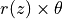 vs. )
)5: stretched opened (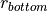 vs.)6: concave, starting at 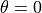
- kwargsdict
Other keyword args will be directly passed to
plot_field_dataSee the documentation of that method for more details.
- Returns
- outtuple
Where
out[0]andout[1]contain the circumferential and meridional grids of coordinates andout[2]the corresponding field output.
-
plot_field_data(x, y, field, create_npz_only=False, ax=None, figsize=3.3, 3.3, save_png=True, aspect='equal', clean=True, outpath='', pngname='plot_from_abaqus.png', npzname='plot_from_abaqus.npz', pyname='plot_from_abaqus.py', num_levels=400, show_colorbar=True, lines=None)[source]¶ Print data field output to a file
- Parameters
- xnumpy.array
Grid of x-coordinates to plot
- ynumpy.array
Grid of y-coordinates to plot
- fieldnumpy.array
Grid of field data to plot
- create_npz_onlybool, optional
If
Trueonly the data belonging to the desired field output will be saved in a.npzfile, and no plotting is performed.- axAxesSubplot, optional
When
axis given, the contour plot will be created inside it.- figsizetuple, optional
The figure size given by
(width, height).- save_pngbool, optional
Flag telling whether the contour should be saved to an image file.
- aspectstr, optional
String that will be passed to the
AxesSubplot.set_aspect()method.- cleanbool, optional
Clean axes ticks, grids, spines etc.
- outpathstr, optional
Output path where the data from Abaqus and the plots are saved (see notes).
- pngnamestr, optional
The file name for the generated image file.
- npznamestr, optional
The file name for the generated npz file.
- pynamestr, optional
The file name for the generated Python file.
- num_levelsint, optional
Number of contour levels (higher values make the contour smoother).
- show_colorbarbool, optional
Include a color bar in the figure.
- lineslist, optional
List of lines to draw on top of the contour plot. Each line is either a 2-tuple (list of x-coords, list of y-coords), or a 2xN numpy array.
Notes
The data is saved using
np.savez()intooutpathasnpznamewith an accompanying script for plottingpyname, very handy when Matplotlib is not importable from Abaqus.
-
plot_msi_opened(plot_type=1, **kwargs)[source]¶ Make an opened MSI (mid-surface imperfection) plot from the current conecyl model
- Parameters
- plot_typeint, optional
For cylinders only
4and5are valid. For cones all the following types can be used:1: concave up (default for cones)2: concave down3: stretched closed4: stretched opened ( vs.)5: stretched opened ( vs.)6: concave, starting at
- kwargsdict
Other keyword args will be passed to
plot_field_dataSee the documentation of that method for more details.
Notes
Must be called from Abaqus
-
plot_orientation_opened(ply_index, use_elements, plot_type=1, **kwargs)[source]¶ Make a fiber orientation plot from the current cone model
Only valid for cones that have a ply piece imperfection.
- Parameters
- ply_indexint
Index of the ply of interest
- use_elementsbool
If
True, use the actual element centroids (from Abaqus) IfFalse, estimate their locations instead.- plot_typeint, optional
For cones all the following types can be used:
1: concave up (default for cones)2: concave down3: stretched closed4: stretched opened ( vs.)5: stretched opened ( vs.)6: concave, starting at
- kwargsdict
Other keyword args will be passed to
plot_field_dataSee the documentation of that method for more details.
Notes
Must be called from Abaqus if
use_elements == True
-
plot_thickness_opened(plot_type=1, **kwargs)[source]¶ Make an opened thickness plot from the current conecyl model
- Parameters
- plot_typeint, optional
For cylinders only
4and5are valid. For cones all the following types can be used:1: concave up (default for cones)2: concave down3: stretched closed4: stretched opened ( vs.)5: stretched opened ( vs.)6: concave, starting at
- kwargsdict
Other keyword args will be passed to
plot_field_dataSee the documentation of that method for more details.
Notes
Must be called from Abaqus
-
prepare_to_save()[source]¶ Prepare the
ConeCylto be savedAny reference to Abaqus objects are removed in this method.
-
r_z_from_pt(pt=0.5)[source]¶ Radius and the axial position from a given normalized position
- Parameters
- ptfloat or np.ndarray
Normalized meridional position.
- Returns
- r, ztuple
The radius and the actual axial position at the given normalized position. It is a tuple of floats if
ptis a float or a tuple ofnumpy.ndarrayobjects ifptis an array.
-
rebuild(force=False, save_rebuild=True)[source]¶ Updates the properties of the current
ConeCylobject- Parameters
- forcebool
Force the update even if it is already rebuilt (even if the
rebuiltattribute isTrue).- save_rebuildbool
Tells if the
rebuiltattribute should beTrueafter the update.
-
transform_plot_data(thetas, zs, values, plot_type, wrap=True)[source]¶ Transform coordinates of plot data, to prepare for plotting
- Parameters
- thetasnumpy.array
Array of circumferential coordinates
- zsnumpy.array
Array of vertical coordinates
- valuesnumpy.array
Array of values
- plot_typeint, optional
For cylinders only
4and5are valid. For cones all the following types can be used:1: concave up (default for cones)2: concave down3: stretched closed4: stretched opened ( vs.)5: stretched opened ( vs.)6: concave, starting at
- wrapbool, optional
If
True, wrap -coordinates to within the correct
range (either 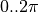 or 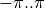).
-coordinates to within the correct
range (either 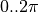 or 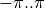).
- Returns
- outtuple
Where
out[0]andout[1]contain the horizontal and vertical grids of coordinates andout[2]the values.
-
write_job(submit=False, wait=True, multiple_cores=False)[source]¶ Writes the job of the corresponding Abaqus model
Note
Must be called from Abaqus
- Parameters
- submitbool, optional
If the job should be submitted.
- waitbool, optional
If the routine should wait in case the job was submitted.
- multiple_coresbool, optional
If multiple cores should be used in the run. Some licenses are limited to one core.
Imperfections (desicos.abaqus.imperfections)¶
Embodies all imperfections that will be included in the finite element model.
The imperfections are grouped in one imperfection configuration
ImpConf which knows how to add each imperfection type. In the example
below a perturbation load and an axisymmetric imperfection are included.
Note that the perturbation load is added in step 1 while the axial load in
step 2, meaning that the perturbation load will kept a constant load while
the axial load will be incremented along the non-linear analysis (see
detailed description in ConeCyl):
from desicos.abaqus.conecyl import ConeCyl
cc = ConeCyl()
cc.from_DB('huehne_2008_z07')
cc.impconf.add_pload(pt=0.5, pltotal=4., step=1)
cc.impconf.add_axisymmetric(pt=0.2, b=50, wb=1.)
cc.axial_load = 100000
cc.axial_step = 2
cc.create_model()
- The finite element model is created in two steps:
creating all the partitions at the moment the mesh is generated
creating all the imperfections in a later step
Each imperfection has a method rebuild(), which must update two key
properties thetadegs and pts, which are lists containing the necessary
data for creating the partitions correctly.
Additionaly, each imperfection has a method create(), which creates the
imperfection itself, looking for the right nodes that should be translated and
so forth.
Invalid imperfections are identified when pt < 0. or pt > 1.,
which are just ignored and an error message is printed.
Imperfection Configuration (desicos.abaqus.imperfections.impconf)¶
-
class
desicos.abaqus.imperfections.impconf.ImpConf[source]¶ Imperfection Configuration
Created by default as one attribute of the
ConeCylobject, accessed through:cc = ConeCyl() impconf = cc.impconf
If one has the
impconfobject and wants to access the correspondingConeCylobject, the attributeconecylcan be used as examplified below. Note that if noConeCylis assigned to this imperfection configuration aNonevalue will be obtained:cc = impconf.conecyl
The imperfections are grouped in the attributes detailed below.
Attributes
Description
uneven_bottom_edge
UnevenBottomEdgeobjectuneven_top_edge
UnevenTopEdgeobjectploads
listofPLoad(Perturbation Load) objectsdimples
listofDimple(Dimple Imperfection) objectsaxisymmetrics
listofAxisymmetric(Axisymmetric Imperfection) objectslbmis
listofLBMI(Linear Buckling Mode-Shaped Imperfection) objectstis
listofTI(Thickness Imperfection) objectsmsis
listofMSI(Mid-Surface Imperfection) objectscutouts
listofCutoutobjectsppi
PPI(Ply Piece Imperfection) object orNoneif not setffi
FFI(Fiber Fraction Imperfection) object orNoneif not setMethods
add_axisymmetric(pt, b, wb)Add an Axisymmetric Imperfection (AI)
add_cb(thetadeg, pt, cbtotal[, step])Add a Constant Amplitude Perturbation Buckle Imperfection
add_cutout(thetadeg, pt, d[, …])Add a cutout
add_dimple(thetadeg, pt, a, b, wb)Add a Dimple Imperfection (DI)
add_ffi(nominal_vf, E_matrix, nu_matrix, use_ti)Adds Fiber Fraction Imperfection (FFI)
add_lbmi(mode, scaling_factor)Add a Linear Buckling Mode-shaped Imperfection (LBMI)
add_measured_u3s_bottom_edge(thetadegs, u3s)Add a measured uneven bottom edge
add_measured_u3s_top_edge(thetadegs, u3s)Add a measured uneven top edge
add_msi([imp_ms, scaling_factor, …])Add a Mid-Surface Imperfection (MSI)
add_pload(thetadeg, pt, pltotal[, step])Add a Perturbation Load
add_ppi(info, extra_height)Adds Ply Piece Imperfection (PPI)
add_shim_bottom_edge(thetadeg, thick, width)Add a Shim to the bottom edge
add_shim_top_edge(thetadeg, thick, width)Add a Shim to the top edge
add_ti(imp_thick, scaling_factor)Add Thickness Imperfection (TI)
create
rebuild
-
add_axisymmetric(pt, b, wb)[source]¶ Add an Axisymmetric Imperfection (AI)
- Parameters
- ptfloat
Normalized meridional position.
- bfloat
Half-wave length.
- wbfloat
Imperfection amplitude (amplitude of the half-wave).
- Returns
- ax
Axisymmetricobject.
- ax
-
add_cb(thetadeg, pt, cbtotal, step=1)[source]¶ Add a Constant Amplitude Perturbation Buckle Imperfection
- Parameters
- thetadegfloat
Circumferential position.
- ptfloat
Normalized meridional position.
- cbtotalfloat
The magnitude of the constant buckle (it is always applied normally to the shell surface).
- stepint
The step in which the constant buckle will be included. In
step=1the load is constant along the analysis while instep=2the load is incremented.
- Returns
- cb
CBampobject.
- cb
-
add_cutout(thetadeg, pt, d, drill_offset_deg=0.0, clearance_factor=0.75, numel_radial_edge=4, prop_around_cutout=None)[source]¶ Add a cutout
- Parameters
- thetadegfloat
Circumferential position of the dimple.
- ptfloat
Normalized meridional position.
- dfloat
Diameter of the drilling machine.
- drill_offset_degfloat, optional
Angular offset when the drilling is not normal to the shell surface. A positive offset means a positive rotation about the
axis, along the meridional plane.- clearance_factorfloat, optional
Fraction of the diameter to apply as clearance around the cutout. This clearance is partitoned and meshed separately from the rest of the cone / cylinder.
- numel_radial_edgeint, optional
Number of elements along the radial edges about the cutout center. This parameter affects the aspect ratio of the elements inside the cutout area.
- prop_around_cutoutdict, optional
Dictionary with keys:
‘mode’ : str (‘radius’ or ‘partition’)
‘radius’ : float
‘stack’: list of floats
‘plyts’: list of floats
‘mat_names’: list of strings
.
Examples:
Defining a property with
'mode'='radius':prop_around_cutout = { 'mode': 'radius', 'radius': 10., 'stack': [0, 90, 0], 'plyts': [0.125, 0.125, 0.125], 'mat_names': ['Alum', 'Alum', 'Alum'], }
Defining a property with
'mode'='partition':prop_around_cutout = { 'mode': 'partition', 'stack': [0, 90, 0], 'plyts': [0.125, 0.125, 0.125], 'mat_names': ['Alum', 'Alum', 'Alum'], }
Note
mat_namesmust be a list of materials already created in the current model in Abaqus
- Returns
- cutout
Cutoutobject.
- cutout
-
add_dimple(thetadeg, pt, a, b, wb)[source]¶ Add a Dimple Imperfection (DI)
- Parameters
- thetadegfloat
Circumferential position of the dimple.
- afloat
Circumferential half-wave length of the dimple.
- bfloat
Meridional half-wave length of the dimple.
- wbfloat
Imperfection amplitude.
- Returns
- d
Dimpleobject.
- d
-
add_ffi(nominal_vf, E_matrix, nu_matrix, use_ti, global_sf=None)[source]¶ Adds Fiber Fraction Imperfection (FFI)
There can be only one of these, so calling this function overrides the previous imperfection, if any.
- Parameters
- nominal_vffloat
Nominal fiber volume fraction of the material
- E_matrixfloat
Young’s modulus of the matrix material
- nu_matrixfloat
Poisson’s ratio of the matrix material
- use_tibool
If
True, create varying material properties according to the thickness imperfection data (if present).- global_sffloat or
None Global scaling factor to apply to the material thickness. Set to
Noneto disable. The global scaling may be overridden by a thickness imperfection, ifuse_ti(see above) isTrue.
- Returns
- ffi
FFIobject.
- ffi
-
add_lbmi(mode, scaling_factor)[source]¶ Add a Linear Buckling Mode-shaped Imperfection (LBMI)
- Parameters
- modeint
Mode number corresponding to this eigenvector.
- scaling_factorfloat
Amplitude of this eigenvector when applied as an imperfection.
- Returns
- lbmi
LBMIobject.
- lbmi
-
add_measured_u3s_bottom_edge(thetadegs, u3s)[source]¶ Add a measured uneven bottom edge
Straightforward method to include measured data about the bottom edge imperfection.
Adopts the coordinate system of this figure when defining the 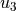 displacements for each
value.The edge imperfection that actually goes for each node is a linear interpolation of the measured values.
- Parameters
- thetadegslist
The circumferential positions where the imperfect bottom edge was measured, in degrees.
- u3slist
The measured imperfections representing displacements along the
axis of the adopted model.
-
add_measured_u3s_top_edge(thetadegs, u3s)[source]¶ Add a measured uneven top edge
Straightforward method to include measured data about the top edge imperfection.
Adopts the coordinate system of this figure when defining the displacements for each
value.The edge imperfection that actually goes for each node is a linear interpolation of the measured values.
- Parameters
- thetadegslist
The circumferential positions where the imperfect top edge was measured, in degrees.
- u3slist
The measured imperfections representing displacements along the
axis of the adopted model.
-
add_msi(imp_ms='', scaling_factor=1.0, R_best_fit=None, H_measured=None, path=None, use_theta_z_format=True, rotatedeg=0.0, ignore_bot_h=True, ignore_top_h=True, stretch_H=False, c0=None, m0=None, n0=None, funcnum=None)[source]¶ Add a Mid-Surface Imperfection (MSI)
Also called geometric imperfection.
If the imperfection is already included in the database only the corresponding entry
imp_msand the scaling factor need to be specified.If the imperfection is not in the database one can specify the full path for the file containing the imperfection, the measured radius and height, as detailed below.
- Parameters
- imp_msstr, optional
Name of the imperfection in the database.
- scaling_factorfloat, optional
Scaling factor applied to the original imperfection amplitude, usually to allow imperfection sensitivity studies.
- R_best_fitfloat, optional
Best fit radius obtained with functions
best_fit_cylinder()orbest_fit_cone().- alphadeg_measuredfloat
The semi-vertex angle of the measured sample (it is
0.for a cylinder).- H_measuredfloat, optional
The total height of the measured test specimen, including eventual resin rings at the edges.
- pathstr, optional
Full path to the file containing the imperfection data.
- use_theta_z_formatbool, optional
If the imperfection file is in the 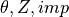 format instead of the 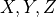 format.
- rotatedegfloat, optional
Rotation angle in degrees telling how much the imperfection pattern should be rotated about the
(or ) axis.- ignore_bot_hfloat, optional
Used to ignore nodes from the bottom resin ring. The default value
Truewill use data from the bottom resin ring, if it exists.- ignore_top_hfloat, optional
Used to ignore nodes from the top resin ring. The default value
Truewill use data from the top resin ring, if it exists.- stretch_Hbool, optional
If the measured imperfection does not cover the whole height it will be stretched. If
stretch_H==True,ignore_bot_handignore_top_hare automatically set toFalse.- c0str or np.ndarray, optional
The coefficients representing the imperfection pattern. If supplied will overwrite the imperfection data passed using the other parameters. For more details see
calc_c0().- m0int, optional
Number of terms along the meridian (
 ) used to obtain
) used to obtain c0, seecalc_c0().- n0int, optional
Number of terms along the circumference (
) used to obtain
c0, seecalc_c0().- funcnumint, optional
The base function used to obtain
c0, seecalc_c0().
- Returns
- msi
MSIobject.
- msi
-
add_pload(thetadeg, pt, pltotal, step=1)[source]¶ Add a Perturbation Load
- Parameters
- thetadegfloat
Circumferential position.
- ptfloat
Normalized meridional position.
- pltotalfloat
The magnitude of the perturbation load (it is always applied normally to the shell surface).
- stepint
The step in which the perturbation load will be included. In
step=1the load is constant along the analysis while instep=2the load is incremented.
- Returns
- pload
PLoadobject.
- pload
-
add_ppi(info, extra_height)[source]¶ Adds Ply Piece Imperfection (PPI)
There can be only one of these, so calling this function overrides the previous imperfection, if any. Note: Applicable for cones only!
-
add_shim_bottom_edge(thetadeg, thick, width)[source]¶ Add a Shim to the bottom edge
- Parameters
- thetadegfloat
Circumferential position where the shim starts.
- thickfloat
Thickness of the shim.
- widthfloat
Perimetrical width of the shim (along the shell perimeter).
- Returns
- shim
Shimobject.
- shim
-
add_shim_top_edge(thetadeg, thick, width)[source]¶ Add a Shim to the top edge
- Parameters
- thetadegfloat
Circumferential position where the shim starts.
- thickfloat
Thickness of the shim.
- widthfloat
Perimetrical width of the shim (along the shell perimeter).
- Returns
- shim
Shimobject.
- shim
-
add_ti(imp_thick, scaling_factor)[source]¶ Add Thickness Imperfection (TI)
The imperfection must be already included in the database (check this tutorial).
- Parameters
- imp_thickstr
Name of the thickness imperfection in the database.
- scaling_factorfloat
Scaling factor applied to the original imperfection amplitude, usually to allow imperfection sensitivity studies.
- Returns
- ti
TIobject.
- ti
-
Imperfection (desicos.abaqus.imperfections.imperfection)¶
Axisymmetric (desicos.abaqus.imperfections.axisymmetric)¶
-
class
desicos.abaqus.imperfections.axisymmetric.Axisymmetric(pt, b, wb)[source]¶ Axisymmetric Imperfection
The imperfection definition is a special case of the dimple imperfection proposed by Wullschleger and Meyer-Piening (2002) (see
Dimple).Methods
create()Realizes the axisymmetric imperfection in the finite element model
calc_amplitude
create_sketch_plane
get_xyz
rebuild
Dimple (desicos.abaqus.imperfections.dimple)¶
-
class
desicos.abaqus.imperfections.dimple.Dimple(thetadeg, pt, a, b, wb)[source]¶ Dimple imperfection
References
Wullschleger, L. and Meyer-Piening, H.-R.. Buckling of geometrically imperfect cylindrical shells - definition of a buckling load. International Journal of Non-Linear Mechanics 37 (2002) 645-657.
Methods
create()Realizes the dimple imperfection in the finite element model
calc_amplitude
create_sketch_plane
get_xyz
rebuild
Geometric Imperfection (desicos.abaqus.imperfections.msi)¶
-
class
desicos.abaqus.imperfections.msi.MSI[source]¶ Mid-Surface Imperfection
The imperfections are applied using both an inverse-weighted interpolation algorithm, detailed in
inv_weighted(), or a continuous fitting function, detailed incalc_c0().The following attributes of the
MSIobject control the inverse-weighted algorithm:Attribute
Description
ncpint, number of closest pointspower_parameterfloat, power parameternum_sec_zint, number of sections used to spatially classify the measured points in order to accelerate the searching routinesr_TOLfloat, percentage tolerance to ignore noisy data, for example, whenr_TOL=1.the points with a radius 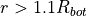Additional attributes are used to apply the imperfection into the finite element model when the inverse-weighted algorithm is selected.
Attribute
Description
imp_msstr, an entry in the imperfection database, if an entry with this string key is found, it will overwrite the parameters:path, R_best_fit, H_measuredpathstr, full path to the imperfection fileuse_theta_z_formatbool, if the imperfection file is in the or in the formatR_measuredfloat, best fit radius obtained with functionsbest_fit_cylinder()orbest_fit_cone()H_measuredfloat, height of the specimen for which the imperfection file corresponds toscaling_factorfloat, a scaling factor that is applied to the imperfection amplitudesample_sizeAvoids a memory overflow during runtime for large imperfection files
rotatedegfloat, rotation angle in degrees telling how much the imperfection pattern should be rotated about the (or ) axis.The following attributes of the
MSIobject control the continuous function-based algorithm:Attribute
Description
c0np.ndarray, coefficients giving the amplitude of each term in the approximation function given byfuncnum. If specified overwrites evenimp_msNote
The coefficients
c0must be calculated already consideringrotatedegusing functioncalc_c0()m0int, number of terms along the meridional coordinaten0int, number of terms alog the circumferential coordinatefuncnumint, the base function used for the approximation, as detailed incalc_c0()scaling_factorfloat, a scaling factor that is applied to the imperfection amplitudeAdditional parameters that govern how the imperfection pattern will look like in the finite element model:
Attribute
Description
ignore_bot_hUsed to ignore nodes from the bottom resin ring. The default value
Truewill automatically obtain the resin ring dimensions. Set toFalseorNoneif an imperfection pattern “extruded” to both edges is the desired behaviorignore_top_hSimilar to
ignore_bot_h, but for the top edge.stretch_HIf the measured imperfection does not cover the whole height it will be stretched. If
stretch_H is True,ignore_bot_handignore_top_hare automatically set toFalseMethods
Calculates the geometric imperfection of the finite element model
create([force])Applies the mid-surface imperfection in the finite element model
print_to_file
rebuild
-
desicos.abaqus.imperfections.msi.calc_msi_amplitude(cc, force=False)[source]¶ Calculates the mid-surface imperfection of a ConeCyl model
Note
Must be called from Abaqus.
- Parameters
- ccConeCyl object
The
ConeCylobject already- forcebool, optional
Does not the check if the finite element model is already created.
- Returns
- max_ampfloat
The maximum absolute amplitude.
Perturbation Load (desicos.abaqus.imperfections.pload)¶
-
class
desicos.abaqus.imperfections.pload.PLoad(thetadeg, pt, pltotal, step=1)[source]¶ Perturbation Load
Methods
Calculate the imperfection amplitude.
create()Include the perturbation load.
create_sketch_plane
get_xyz
rebuild
-
calc_amplitude()[source]¶ Calculate the imperfection amplitude.
The odb must be available and it will be used to extract the last frame of the first analysis step, corresponding to the constant loads.
-
create()[source]¶ Include the perturbation load.
The load step in which the perturbation load is included depends on the
stepparameter, which can be 1 or 2. If applied in the first step it will be kept constant, whereas in the second step it will be incremented.The perturbation load is included after finding its corresponding vertice. The perturbation load is not created if its value is smaller then
0.1*TOL(seedesicos.constants).Note
Must be called from Abaqus.
-
Thickness Imperfection (desicos.abaqus.imperfections.ti)¶
-
class
desicos.abaqus.imperfections.ti.TI[source]¶ Thickness Imperfection
Assumes that a percentage variation of the laminate thickness can be represented by the same percentage veriation of each ply, i.e., each ply thickness is varied in order to reflect a given measured thickness imperfection field.
Methods
Calculates the thickness imperfection amplitude
create([force])Creates the thickness imperfection
rebuild
-
calc_amplitude()[source]¶ Calculates the thickness imperfection amplitude
Amplitude measured as the biggest difference between each layup thickness and the nominal thickness of the Cone/Cylinder, considering only the layups that are not suppressed.
Note
Must be called from Abaqus.
- Returns
- max_ampfloat
Maximum absolute imperfection amplitude.
-
create(force=False)[source]¶ Creates the thickness imperfection
The thickness imperfection is created assuming that each ply has the same contribution to the measured laminate thickness. Thus, a scaling factor is applied to the nominal thickness of each ply in order to macth the measured imperfection field.
- Parameters
- forcebool, optional
If
Truethe thickness imperfection is applied even when it is already created.
-
Uneven Edges (desicos.abaqus.imperfections.uneven_edges)¶
-
class
desicos.abaqus.imperfections.uneven_edges.Shim(thetadeg, thick, width, edge=None)[source]¶ Represents a shim added to one of the edges
Attributes
Description
edge
An object of the class
UnevenTopEdgethetadeg
The circumferential position where the shim starts
thick
The shim thickness
width
The shim perimetrical width (along the shell perimeter)
-
class
desicos.abaqus.imperfections.uneven_edges.UnevenBottomEdge(betadeg=None, omegadeg=None)[source]¶ Uneven Bottom Edge
The following attributes are taken into account: - misalignment of the bottom edge - presence of shims - measured uneven edge points
Attributes
Description
uneven_plate
bool: If the unevenness should be applied to the testing plate or to the test specimenbetadeg
Misalignment of the bottom edge in degrees
omegadeg
Azimuth angle of the bottom edge misalignment in degrees.
shims
listof shims included to this edgemeasured_u3s
Measured points describing the edge imperfection
Methods
add_measured_u3s(thetadegs, u3s)Adds measured data to the uneven bottom edge
add_shim(thetadeg, thick, width)Adds a shim to the uneven bottom edge
create()Creates the uneven bottom edge imperfections
calc_amplitude
rebuild
-
add_measured_u3s(thetadegs, u3s)[source]¶ Adds measured data to the uneven bottom edge
The edge imperfection that actually goes for each node is a linear interpolation of the measured values.
- Parameters
- thetadegslist
The circumferential positions where the imperfect bottom edge was measured, in degrees.
- u3slist
The measured imperfections representing displacements along the
axis of the adopted model.
-
add_shim(thetadeg, thick, width)[source]¶ Adds a shim to the uneven bottom edge
- Parameters
- thetadegfloat
Circumferential position where the shim starts.
- thickfloat
Thickness of the shim.
- widthfloat
Perimetrical width of the shim (along the shell perimeter).
- Returns
- shim
Shimobject.
- shim
-
create()[source]¶ Creates the uneven bottom edge imperfections
The uneven bottom edge will be represented by many GAP elements created in such a way to consider all the imperfections contained in the current
UnevenBottomEdgeobject.The output file
cc.model_name + '_bottom_edge.gaps'will be created, whereccis theConeCylobject that contains thisUnevenBottomEdgeobject.The following steps are executed:
get the
coordinate of the bottom nodes from the shell and
bottom resin ringsget imperfection from the
shimsattributeget any additional imperfection of the bottom edge represented by
measured_u3s
Assumptions:
for a given
coordinate the uneven displacement is the same
for all the shell and resin ring nodes
Note
Must be called from Abaqus
-
-
class
desicos.abaqus.imperfections.uneven_edges.UnevenTopEdge(betadeg=None, omegadeg=None)[source]¶ Uneven Top Edge
The following attributes are taken into account: - misalignment of the top edge - presence of shims - measured uneven edge points
Attributes
Description
uneven_plate
bool: If the unevenness should be applied to the testing plate or to the test specimenbetadeg
float: Misalignment of the top edge in degreesomegadeg
float: Azimuth angle of the top edge misalignment in degreesshims
listof shims included to this edgemeasured_u3s
Measured points describing the edge imperfection
Methods
add_measured_u3s(thetadegs, u3s)Adds measured data to the uneven top edge
add_shim(thetadeg, thick, width)Adds a shim to the uneven top edge
create()Creates the uneven top edge imperfections
calc_amplitude
rebuild
-
add_measured_u3s(thetadegs, u3s)[source]¶ Adds measured data to the uneven top edge
The edge imperfection that actually goes for each node is a linear interpolation of the measured values.
- Parameters
- thetadegslist
The circumferential positions where the imperfect top edge was measured, in degrees.
- u3slist
The measured imperfections representing displacements along the
axis of the adopted model.
-
add_shim(thetadeg, thick, width)[source]¶ Adds a shim to the uneven top edge
- Parameters
- thetadegfloat
Circumferential position where the shim starts.
- thickfloat
Thickness of the shim.
- widthfloat
Perimetrical width of the shim (along the shell perimeter).
- Returns
- shim
Shimobject.
- shim
-
create()[source]¶ Creates the uneven top edge imperfections
The uneven top edge will be represented by many GAP elements created in such a way to consider all the imperfections contained in the current
UnevenTopEdgeobject.The output file
cc.model_name + '_top_edge.gaps'will be created, whereccis theConeCylobject that contains thisUnevenTopEdgeobject.The following steps are executed:
get the
coordinate of the top nodes from the shell and top
resin ringsget imperfection from the
shimsattributeget any additional imperfection of the top edge represented by
measured_u3sinclude effect of the misalignment angle
betadeg
Assumptions:
for a given
coordinate the uneven displacement is the same
for all the shell and resin ring nodes, but the load asymmetry angle
self.betadegmay change this equality. The contribution due to is given by:
is given by: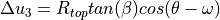
Note
Must be called from Abaqus
-
Cutout (desicos.abaqus.imperfections.cutout)¶
-
class
desicos.abaqus.imperfections.cutout.Cutout(thetadeg, pt, d, drill_offset_deg=0.0, clearance_factor=0.75, numel_radial_edge=4, prop_around_cutout=None)[source]¶ - Parameters
- thetadegfloat
Circumferential position of the dimple.
- ptfloat
Normalized meridional position.
- dfloat
Diameter of the drilling machine.
- drill_offset_degfloat, optional
Angular offset when the drilling is not normal to the shell surface. A positive offset means a positive rotation about the
axis, along the meridional plane.- clearance_factorfloat, optional
Fraction of the diameter to apply as clearance around the cutout. This clearance is partitoned and meshed separately from the rest of the cone / cylinder.
- numel_radial_edgeint, optional
Number of elements along the radial edges about the cutout center. This parameter affects the aspect ratio of the elements inside the cutout area.
- prop_around_cutoutdict, optional
Dictionary with keys:
‘mode’ : str (‘radius’ or ‘partition’)
‘radius’ : float
‘stack’: list of floats
‘plyts’: list of floats
‘mat_names’: list of strings
.
Examples:
Defining a property with
'mode'='radius':prop_around_cutout = { 'mode': 'radius', 'radius': 10., 'stack': [0, 90, 0], 'plyts': [0.125, 0.125, 0.125], 'mat_names': ['Alum', 'Alum', 'Alum'], }
Defining a property with
'mode'='partition':prop_around_cutout = { 'mode': 'partition', 'stack': [0, 90, 0], 'plyts': [0.125, 0.125, 0.125], 'mat_names': ['Alum', 'Alum', 'Alum'], }
Note
mat_namesmust be a list of materials already created in the current model in Abaqus
Methods
calc_amplitude
create
create_prop_around_cutout
rebuild
Ply Piece Imperfection (desicos.abaqus.imperfections.ppi)¶
-
class
desicos.abaqus.imperfections.ppi.PPI(info, extra_height=0)[source]¶ Ply Piece Imperfection
Laminating a cone with a finite number of ply pieces causes deviations between the nominal fiber angle (e.g. 30 degrees) and the actual angle, which varies with the location on the cone. This imperfection can be used to include that effect in the simulation.
Attributes
Description
infolistwith info about the layup of this cone. Length of the list should be at least equal to the number of plies. Each entry is adict, containing:starting_position:float, Radius in the flattened cone ((s, phi)-coordinate system) where the origin line (L0) of the basic ply piece intersects the horizontal axismax_width:float, maximum width of a single ply piece.rel_ang_offset:float, optional, default is 0. Relative angular offset (0..1) to be used when positioning the pieces in this ply. Used to avoid overlapping of seams, when multiple plies have the same orientation.eccentricity:float, eccentricity param (range 0…1) that controls the positioning of the ply piece relative to the origin line. Optional, the default value is dependent on the nominal fiber angle:0.5 if
cc.stack[i] == 00.0 if
cc.stack[i] > 01.0 if
cc.stack[i] < 0
extra_heightfloat, extra height above and below the cone height () to consider in the ply placement model.Notes
This imperfection only works for cones, not for cylinders.
Methods
create()Actually create the imperfection
fiber_orientation(ply_index, coords)Determine the local fiber orientation at a set of coordinates, given in the global Cartesian (x, y, z) coordinate system.
gcs_to_unfolded(x, y, z)Convert global xyz coordinates to the unfolded (eta, zeta)-csys.
get_ply_lines(ply_index[, center_theta_zero])Obtain a series of lines that can be used to draw all ply pieces.
unfolded_to_gcs(eta, zeta[, approx_phi, …])Convert unfolded (eta, zeta)-coordinates to the global coordinate system.
calc_amplitude
create_sketch_plane
get_xyz
rebuild
-
create()[source]¶ Actually create the imperfection
This modifies all composite layups to replace their existing (constant) ply orientations with values that are defined by a discrete field.
Note
Must be called from Abaqus.
-
fiber_orientation(ply_index, coords)[source]¶ Determine the local fiber orientation at a set of coordinates, given in the global Cartesian (x, y, z) coordinate system. If points are not covered by any ply piece, NaN is returned for those
- Parameters
- ply_indexint
Index of the ply of interest
- coordsnumpy.array
Two-dimensional array containing one row per point and the x-, y- and z-coordinates of each point as columns.
- Returns
- thetasnumpy.array
Local fiber angle at each given point in the ply, in degrees.
-
gcs_to_unfolded(x, y, z)[source]¶ Convert global xyz coordinates to the unfolded (eta, zeta)-csys.
- Parameters
- xfloat or numpy array
X-coordinates in global Cartesian coordinate system
- yfloat or numpy array
Y-coordinates in global Cartesian coordinate system
- zfloat or numpy array
Z-coordinates in global Cartesian coordinate system
- Returns
- outtuple
A 2-tuple, where out[0] contains the eta-coordinate(s) and out[1] the zeta-coordinate(s) corresponding to the given point(s).
Notes
Input coordinates should be on the surface of the cone.
-
get_ply_lines(ply_index, center_theta_zero=True)[source]¶ Obtain a series of lines that can be used to draw all ply pieces.
- Parameters
- ply_indexint
Index of ply to construct lines for.
- center_theta_zerobool
Plot the ply pieces in the -pi…pi range, instead of 0..2pi
- Returns
- lineslist
List of lines. Each line is a 2-tuple (thetas, zs), containing a list of circumferential coordinates and a list of vertical coordinates of the points along the line.
-
unfolded_to_gcs(eta, zeta, approx_phi=0.0, cylindrical=False)[source]¶ Convert unfolded (eta, zeta)-coordinates to the global coordinate system.
- Parameters
- etafloat or numpy array
Horizontal coordinates in the unfolded coordinate system.
- zetafloat or numpy array
Vertical coordinates in the unfolded coordinate system.
- approx_phifloat, optional
As an intermediate step, the (eta, zeta)-coordinates are converted to polar (s, phi)-coordinates. This transformation is multivalued, as (s, phi + 2pi) and such is also a valid result. Resolve this ambiguity by choosing the value of phi closest to approx_phi, so within the (approx_phi - pi, approx_phi + pi) range.
- cylindricalbool, optional
Whether to return output values in a Cartesian (if
False) or cylindrical (ifTrue) coordinate system. Default isFalse.
- Returns
- outtuple
A 3-tuple, containing (depending on the parameter
cylindrical) either (x, y, z) or (r, theta, z)-coordinates.
Fiber Fraction Imperfection (desicos.abaqus.imperfections.ffi)¶
-
class
desicos.abaqus.imperfections.ffi.FFI(nominal_vf, E_matrix, nu_matrix, use_ti, global_sf=None)[source]¶ Fiber Fraction Imperfection
Thickness variations are generally caused by a varying amount of matrix, while the amount of fibers remains constant. Thus, the actual fiber volume fraction is higher in thinner sections of the material. This imperfection aims to include that effect in the model, by adjusting the material properties.
Attributes
Description
nominal_vf
float, nominal fiber volume fractionE_matrix
float, Young’s modulus of the matrix materialnu_matrix
float, Poisson’s ratio of the matrix materialuse_ti
bool, ifTrue, create varying material properties according to the thickness imperfection data (if present).global_sf
floatorNone, global scaling factor to apply to the material thickness. Set toNoneto disable. The global scaling may be overridden by a thickness imperfection, ifuse_ti(see above) isTrue.created
bool,Trueafter the imperfection has been created.- Attributes
- scaling_factor
Methods
Calculates the imperfection amplitude
calc_scaled_laminaprop(laminaprop, …)Calculate material properties of a lamina with a scaled thickness.
create()Actually create the imperfection
Call this function after the thickness imperfection(s) are applied, to modify the material properties as well, if needed.
create_sketch_plane
get_xyz
rebuild
-
calc_amplitude()[source]¶ Calculates the imperfection amplitude
Amplitude measured as the biggest thickness difference between the actual and nominal layup thickness of the Cone/Cylinder, considering only the layups that have this imperfection applied.
Note
Must be called from Abaqus.
- Returns
- max_ampfloat
Maximum absolute imperfection amplitude.
-
calc_scaled_laminaprop(laminaprop, scaling_factor)[source]¶ Calculate material properties of a lamina with a scaled thickness.
Calculates the new lamina properties, if a given material (lamina) is scaled in thickness by a given factor. The new material properties are calculated from the properties of the fiber and the matrix, using the composition rule (for E11 and nu12) and the corrected composition rule (for E22, G12, G13 and G23).
The matrix properties are to be supplied by the user. The fiber properties are calculated based on the original (nominal) lamina properties, using the inverse of the respective composition rule.
- Parameters
- laminaproptuple
Material properties (E11, E12, nu12, G12, G13, G23) of the lamina at the nominal thickness
- scaling_factorfloat
Scaling factor that is to be applied to the ply thickness. The total amount of fibers is assumed to remain constant, thus the actual fiber volume fraction is inversely proportional to this scaling factor.
- Returns
- new_laminaproptuple
Lamina properties of the lamina with a scaled thickness
Apply Imperfections (desicos.abaqus.apply_imperfections)¶
Routines to apply geometric and thickness imperfections into the finite element model.
-
desicos.abaqus.apply_imperfections.calc_translations_ABAQUS(imperfection_file_name, model_name, part_name, H_model, H_measured, R_model, R_best_fit=None, semi_angle=0.0, stretch_H=False, z_offset_bot=None, rotatedeg=0.0, scaling_factor=1.0, r_TOL=1.0, num_closest_points=5, power_parameter=2, num_sec_z=50, use_theta_z_format=True, ignore_bot_h=None, ignore_top_h=None, sample_size=None, T=None)[source]¶ Reads an imperfection file and calculates the nodal translations
- Parameters
- imperfection_file_namestr
Full path to the imperfection file.
- model_namestr
Model name.
- part_namestr
Part name.
- H_modelfloat
Total height of the model where the imperfections will be applied to, considering also eventual resin rings.
- H_measuredfloat
The total height of the measured test specimen, including eventual resin rings at the edges.
- R_modelfloat
Radius at the bottom edge of the model where the imperfections will be applied to.
- R_best_fitfloat, optional
Best fit radius obtained with functions
best_fit_cylinder()orbest_fit_cone().- semi_anglefloat, optional
Cone semi-vertex angle in degrees, when applicable.
- stretch_Hbool, optional
If the measured imperfection data should be stretched to the current model (which may happen when
H_model!=H_measured.- z_offset_botfloat, optional
It is common to have the measured data not covering the whole test specimen, and therefore it will be centralized, if a non-centralized position is desired this parameter can be used for the adjustment.
- rotatedegfloat, optional
Rotation angle in degrees telling how much the imperfection pattern should be rotated about the
(or ) axis.- scaling_factorfloat, optional
A scaling factor that can be used to study the imperfection sensitivity.
- r_TOLfloat, optional
Percentage tolerance to ignore noisy data from the measurements.
- num_closest_pointsint, optional
- power_parameterfloat, optional
- num_sec_zint, optional
Number of spatial sections used to classify the measured data in order to accelerate the searching algorithms
- use_theta_z_formatbool, optional
If the new format should be used instead of the old .
- ignore_bot_hNone or float, optional
Used to ignore nodes from the bottom resin ring.
- ignore_top_hNone or float, optional
Used to ignore nodes from the top resin ring.
- sample_sizeint, optional
If the input file containing the measured data is too large it may be required to limit the sample size in order to avoid memory errors.
- TNone or np.ndarray, optional
A transformation matrix (cf.
transf_matrix()) required when the mesh is not in the default coordinate system.
-
desicos.abaqus.apply_imperfections.change_thickness_ABAQUS(imperfection_file_name, model_name, part_name, stack, t_model, t_measured, H_model, H_measured, R_model, R_best_fit=None, number_of_sets=None, semi_angle=0.0, stretch_H=False, z_offset_bot=None, scaling_factor=1.0, num_closest_points=5, power_parameter=2, num_sec_z=100, elems_t=None, t_set=None, use_theta_z_format=False)[source]¶ Applies a given thickness imperfection to the finite element model
Assumes that a percentage variation of the laminate thickness can be represented by the same percentage veriation of each ply, i.e., each ply thickness is varied in order to reflect a given measured thickness imperfection field.
- Parameters
- imperfection_file_namestr
Full path to the imperfection file.
- model_namestr
Model name.
- part_namestr
Part name.
- stacklist
The stacking sequence of the current model with each angle given in degrees.
- t_modelfloat
The nominal shell thickness of the current model.
- t_measuredfloat
The nominal thickness of the measured specimen.
- H_modelfloat
Total height of the model where the imperfections will be applied to, considering also eventual resin rings.
- H_measuredfloat
The total height of the measured test specimen, including eventual resin rings at the edges.
- R_modelfloat
Radius at the bottom edge of the model where the imperfections will be applied to.
- R_best_fitfloat, optional
Best fit radius obtained with functions
best_fit_cylinder()orbest_fit_cone().- number_of_setsint, optional
Defines in how many levels the thicknesses should be divided. If
Noneit will be based on the input file, and if the threshold of100is exceeded,10sections are used.- semi_anglefloat, optional
Cone semi-vertex angle in degrees, when applicable.
- stretch_Hbool, optional
If the measured imperfection data should be stretched to the current model (which may happen when
H_model!=H_measured.- z_offset_botfloat, optional
It is common to have the measured data not covering the whole test specimen, and therefore it will be centralized, if a non-centralized position is desired this parameter can be used for the adjustment.
- scaling_factorfloat, optional
A scaling factor that can be used to study the imperfection sensitivity.
- num_closest_pointsint, optional
- power_parameterfloat, optional
- num_sec_zint, optional
Number of spatial sections used to classify the measured data in order to accelerate the searching algorithms
- elems_tnp.ndarray, optional
Interpolated thickness for each element. Can be used to avoid the same interpolation to be performed twice.
- t_setset, optional
A
setobject containing the unique thicknesses that will be used to create the new properties.- use_theta_z_formatbool, optional
If the new format should be used instead of the old .
-
desicos.abaqus.apply_imperfections.translate_nodes_ABAQUS(imperfection_file_name, model_name, part_name, H_model, H_measured, R_model, R_best_fit=None, semi_angle=0.0, stretch_H=False, z_offset_bot=None, rotatedeg=0.0, scaling_factor=1.0, r_TOL=1.0, num_closest_points=5, power_parameter=2, num_sec_z=50, nodal_translations=None, use_theta_z_format=False, ignore_bot_h=None, ignore_top_h=None, sample_size=None, T=None)[source]¶ Translates the nodes in Abaqus based on imperfection data
The imperfection amplitude for each node is calculated using an inversed weight function (see
desicos.conecylDB.interpolate.inv_weighted()).- Parameters
- imperfection_file_namestr
The full path to the imperfection file, which must be a file with three columns containing the
x, y, zcoordinates whenuse_theta_z_format=Falseor containingx, theta, amplitudewhenuse_theta_z_format=True.- model_namestr
Must be a valid key in the dictionary
mdb.models, in the interactive Python inside Abaqus.- part_namestr
Must be a valid key in the dictionary
mdb.models[model_name].parts, in the interactive Python inside Abaqus.- H_modelfloat
Total height of the model where the imperfections will be applied to, considering also eventual resin rings.
- H_measuredfloat
The total height of the measured test specimen, including eventual resin rings at the edges.
- R_modelfloat
The radius of the current model. In case of cones this should be the bottom radius.
- R_best_fitfloat, optional
Best fit radius obtained with functions
best_fit_cylinder()orbest_fit_cone().- semi_anglefloat, optional
The cone semi-vertex angle (a null value indicates that a cylinder is beeing analyzed).
- stretch_Hfloat, optional
A boolean indicating if the imperfection pattern should be stretched when applied to the model. The measurement systems usually cannot obtain data for the whole surface, making it an option to stretch the data to fit the whole surface. In case
stretch_H=Falsethe measured data of the extremities will be extruded up to the end of the domain.- z_offset_botfloat, optional
This parameter allows the analyst to adjust the height of the measured data about the model, when the measured data is not available for the whole domain.
- rotatedegfloat, optional
Rotation angle in degrees telling how much the imperfection pattern should be rotated about the
(or ) axis.- scaling_factorfloat, optional
The scaling factor that will multiply the calculated imperfection amplitude.
- r_TOLfloat, optional
Parameter to ignore noisy data in the imperfection file, the points with a radius higher than
 will not
be considered in the interpolation.
will not
be considered in the interpolation.- num_closest_pointsint, optional
- power_parameterint, optional
- num_sec_zint, optional
Number of cross sections that will be used to classify the points spatially in the inverse-weighted algorithm.
- nodal_translationsNone or numpy.ndarray, optional
An array containing the interpolated traslations, which is passed to avoid repeated calls to the interpolation functions.
- use_theta_z_formatbool, optional
A boolean to indicate whether the imperfection file contains
x, y, zpositions ortheta, z, amplitude.- ignore_bot_hNone or float, optional
Used to ignore nodes from the bottom resin ring.
- ignore_top_hNone or float, optional
Used to ignore nodes from the top resin ring.
- sample_sizeint, optional
If the input file containing the measured data is too large it may be required to limit the sample size in order to avoid memory errors.
- TNone or np.ndarray, optional
A transformation matrix (cf.
transf_matrix()) required when the mesh is not in the default coordinate system.
- Returns
- nodal_translationsnumpy.ndarray
A 2-D array containing the translations
x, y, zfor each column.
Notes
Despite the nodal traslations are returned all the nodes belonging to this model will already be translated.
-
desicos.abaqus.apply_imperfections.translate_nodes_ABAQUS_c0(m0, n0, c0, funcnum, model_name, part_name, H_model, semi_angle=0.0, scaling_factor=1.0, fem_meridian_bot2top=True, ignore_bot_h=None, ignore_top_h=None, T=None)[source]¶ Translates the nodes in Abaqus based on a Fourier series
The Fourier Series can be a half-sine, half-cosine or a complete Fourier Series as detailed in
desicos.conecylDB.fit_data.calc_c0().- Parameters
- m0int
Number of terms along the
 coordinate.
coordinate.- n0int
Number of terms along the
coordinate.- c0numpy.ndarray
The coefficients that will give the imperfection pattern.
- funcnumint
The function type, as detailed in
desicos.conecylDB.fit_data.calc_c0().- model_namestr
Must be a valid key in the dictionary
mdb.models, in the interactive Python inside Abaqus.- part_namestr
Must be a valid key in the dictionary
mdb.models[model_name].parts, in the interactive Python inside Abaqus.- H_modelfloat
Total height of the model where the imperfections will be applied to, considering also eventual resin rings.
- semi_anglefloat, optional
The cone semi-vertex angle (a null value indicates that a cylinder is beeing analyzed).
- scaling_factorfloat, optional
The scaling factor that will multiply
c0when applying the imperfections.- fem_meridian_bot2topbool, optional
A boolean indicating if the finite element has the
axis starting
at the bottom or at the top.- ignore_bot_hNone or float, optional
Used to ignore nodes from the bottom resin ring.
- ignore_top_hNone or float, optional
Used to ignore nodes from the top resin ring.
- TNone or np.ndarray, optional
A transformation matrix (cf.
transf_matrix()) required when the mesh is not in the default coordinate system.
- Returns
- nodal_translationsnumpy.ndarray
A 2-D array containing the translations
x, y, zfor each column.
Notes
Despite the nodal traslations are returned all the nodes belonging to this model will be already translated.
Abaqus Study (desicos.abaqus.study)¶
-
class
desicos.abaqus.study.Study[source]¶ Study grouping many
ConeCylobjects.The objective of this class is to save any study where different models are included in one
.caefile. THeMethods
Applies all geometric imperfections in this study
Applies all thickness imperfections in this study
Creates the run file which can be called from any Python
save([path])Save the current study
add_cc
add_cc_from_DB
configure_folders
create_models
load
load_by_name
open_excel
plot
plot_forces
rebuild
write_inputs
-
apply_msis()[source]¶ Applies all geometric imperfections in this study
It assumes the same
MSIfor all theConeCylobjects that are in theccscontainer.
-
apply_tis()[source]¶ Applies all thickness imperfections in this study
It assumes the same
TIfor all theConeCylobjects that are in theccscontainer.
-
Utilities (desicos.abaqus.utils)¶
Includes all utilities functions that can be executed without Abaqus.
-
desicos.abaqus.utils.utils.add2list(lst, value, tol=1e-09)[source]¶ Adds a value to a list if it doesn’t exist within a given tolerance
Performs more or less like the Python build-in
set(), but with a tolerance associated.- Parameters
- lstlist
The input list.
- valuefloat
The value to be compared with each element of the input list.
- Returns
- outlist
Extended input list.
-
desicos.abaqus.utils.utils.empirical_P1_isotropic(r, t, E, nu)[source]¶ taken from Wang et al. (2008). An empirical formula for the critical perturbation load
-
desicos.abaqus.utils.utils.get_book_sheet(excel_name, sheet_name)[source]¶ Gets an Excel Worksheet from a given file name
- Parameters
- excel_namestr
The full path for the desired Excel file.
- sheet_namestr
The name of the desired Excel Worksheet.
- Returns
- workbook, sheettuple
A tuple with an
xlwt.Workbookand anxlwt.Worksheetobject.
-
desicos.abaqus.utils.utils.index_within_linspace(a, value)[source]¶ Returns the index where the value fits better
- Parameters
- anp.ndarray or list
The values where the best index will be found.
- valuefloat
The value to be compared with each value in
a.
- Returns
- iint
The index where
valuefits better ina.
-
desicos.abaqus.utils.utils.make_uniform_cells(x1, x2, values)[source]¶ Transform a grid to have uniform cells when plotted.
This is done by replacing each data point in the grid (assumed to be the element centroid) by four points, having the same value. These points are placed such that they would be near the element corners, so the element interior will have a uniform color in a contour plot.
- Parameters
- x1numpy.array
2D array containing the first coordinate (in whatever csys).
- x2numpy.array
2D array containing the second coordinate (in whatever csys).
- valuesnumpy.array
2D array containing the data values.
Notes
Input coordinates
x1andx2are assumed to be regularly spaced. The type of coordinates (Cartesian, cylindrical, …) does not matter.
Geometries (desicos.abaqus.utils.geom)¶
-
class
desicos.abaqus.utils.geom.Plane[source]¶ Plane object
Defined by the attributes:
Attribute
Description
thetadegfloat, circumferential position in degreesp1tuple, a tuple containing the 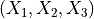 coordinates for point 1p2tuple, a tuple containing the coordinates for point 2p3tuple, a tuple containing the coordinates for point 3part
Abaqus Part object corresponding to this plane
feature
Abaqus Part Feature object corresponding to this plane
datum
Abaqus Part Datum object corresponding to this plane
Methods
create()Creates the plane based on three points
Utilities Abaqus (desicos.abaqus.abaqus_functions)¶
Includes all utilities functions that must be executed from Abaqus.
-
desicos.abaqus.abaqus_functions.configure_session()[source]¶ Improve layout and colors of the current figures in visualization
-
desicos.abaqus.abaqus_functions.create_composite_layup(name, stack, plyts, mat_names, region, part, part_csys, symmetric=False, scaling_factor=1.0, axis_normal=2)[source]¶ Creates a composite layup
- Parameters
- namestr
Name of the new composite layup.
- stacklist
Stacking sequence represented by a list of orientations in degress. The stacking sequence starts inwards a ends outwards. The 0 degree angle is along the axial direction and the angles are measured using the right-hand rule with the normal direction being normal to the shell surface pointing outwards.
- plytslist
List containing the ply thicknesses.
- mat_nameslist
List containing the material name for each ply.
- regionan Abaqus Region object
The region consisting of geometric faces, where this laminate will be assigned to.
- partan Abaqus part Object
A part object where the layup will be created.
- part_csysa valid Datum object
The cylindrical coordinate system of the part object.
- symmetricbool, optional
A boolean telling whether the laminate is symmetric.
- scaling_factorfloat, optional
A scaling factor to be applied to each ply thickness. Used to apply thickness imperfection in some cases.
- axis_normalint, optional
Reference
-
desicos.abaqus.abaqus_functions.create_isotropic_section(name, mat_names, region, part, model, T, Sect_name, OFFTS)[source]¶ Creates an isotropic section
-
desicos.abaqus.abaqus_functions.create_sketch_plane(cc, entity)[source]¶ Creates a sketch plane tangent to the shell surface
- Parameters
- cc
ConeCylobject - entityobject
Any object with the attribute:
thetadeg, usually aImperfection.
- cc
- Returns
- plane
Planeobject
- plane
-
desicos.abaqus.abaqus_functions.edit_keywords(mod, text, before_pattern=None, insert=False)[source]¶ Edit the keywords to add commands not available in Abaqus CAE
- Parameters
- modAbaqus Model object
The model for which the keywords will be edited.
- textstr
The text to be included.
- before_patternstr, optional
One pattern used to find where to put the given text.
- insertbool, optional
Insert the text instead of replacing it.
-
desicos.abaqus.abaqus_functions.modify_composite_layup(part, layup_name, modify_func)[source]¶ Modify plies within a composite layup
Directly modififying plies within a CompositeLayup is not possible, as the plies are read-only after creation. This function emulates modifying, by deleting and then re-creating plies, with modifications.
- Parameters
- partan Abaqus part object
The part that the to-be-modified layup is attached to.
- layup_namestr
Name of the layup that is to be modified.
- modify_funcfunction
Function that will be called for each ply. It should take as arguments the ply index and a dictionary of keyword arguments. This dictionary contains all keyword arguments that would re-create the original ply, if passed to the
CompositePly-constructor. This function should should make the necessary changes this dictionary and then return it. The returned dictionary will then be used to create the new ply.
Stringers (desicos.abaqus.stringers)¶
All stringer classes are grouped in this module.
Each stringer has a method create(), that will be called from
desicos.abaqus.conecyl.create_model(). Below there is an example about
how to add the the blade type of stringers in a ConeCyl model:
import numpy as np
from desicos.abaqus.conecyl import ConeCyl
cc = ConeCyl()
cc.from_DB('huehne_2008_z07')
stack = [0, 0, 90, 90, -45, +45]
laminaprop = (142.5e3, 8.7e3, 0.28, 5.1e3, 5.1e3, 5.1e3)
laminaprops = [laminaprop for _ in stack]
plyts = [0.125 for _ in stack]
for thetadeg in np.linspace(0, 360, 12, endpoint=False):
cc.stringerconf.add_blade_composite(thetadeg=thetadeg, wbot=25, wtop=15,
stack=stack, plyts=plyts, laminaprops=laminaprops, numel_flange=5)
cc.create_model()
Stringers Configuration (desicos.abaqus.stringers.stringerconf)¶
-
class
desicos.abaqus.stringers.stringerconf.StringerConf[source]¶ Stringer configuration class
Methods
add_blade_composite(thetadeg, wbot, wtop, …)Add a composite blade stringer
add_blade_isotropic(thetadeg, wbot, wtop, h, …)Add an isotropic blade stringer
create
-
add_blade_composite(thetadeg, wbot, wtop, stack, plyts, laminaprops, numel_flange=4)[source]¶ Add a composite blade stringer
- Parameters
- thetadegfloat
Circumferential position in degrees.
- wbotfloat
Flange width at the bottom edge.
- wtopfloat
Flange width at the top edge.
- stacklist
Laminate stacking sequence.
- plytslist
Ply thicknesses.
- laminapropslist
The properties for each lamina.
- numel_flangeint, optional
The number of elements along the width.
-
add_blade_isotropic(thetadeg, wbot, wtop, h, E, nu, numel_flange=4)[source]¶ Add an isotropic blade stringer
Implemented as a special case of the composite stringer for isotropic material.
- Parameters
- thetadegfloat
Circumferential position in degrees.
- wbotfloat
Flange width at the bottom edge.
- wtopfloat
Flange width at the top edge.
- hfloat
Stringer thickness
- Efloat
Young Modulus
- nufloat
Poisson’s ratio
- numel_flangeint, optional
The number of elements along the width.
-
Blade Stringers (desicos.abaqus.stringers.blade)¶
-
class
desicos.abaqus.stringers.blade.BladeComposite(thetadeg, wbot, wtop, stack, plyts, laminaprops, numel_flange=4)[source]¶ Blade stringer using composite properties
- Parameters
- thetadegfloat
Circumferential position in degrees.
- wbotfloat
Flange width at the bottom edge.
- wtopfloat
Flange width at the top edge.
- stacklist
Laminate stacking sequence.
- plytslist
Ply thicknesses.
- laminapropslist
The properties for each lamina.
- numel_flangeint, optional
The number of elements along the width.
- Attributes
- thetadegs
Methods
create
-
class
desicos.abaqus.stringers.blade.BladeIsotropic(thetadeg, wbot, wtop, h, E, nu, numel_flange=4)[source]¶ Blade stringer using isotropic properties
- Parameters
- thetadegfloat
Circumferential position in degrees.
- wbotfloat
Flange width at the bottom edge.
- wtopfloat
Flange width at the top edge.
- hfloat
Stringer thickness
- Efloat
Young Modulus
- nufloat
Poisson’s ratio
- numel_flangeint, optional
The number of elements along the width.
- Attributes
- thetadegs
Methods
create